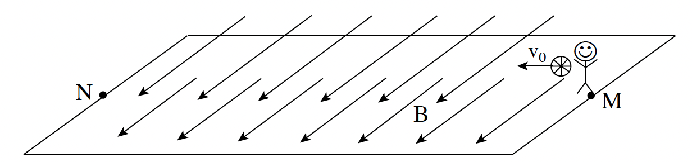
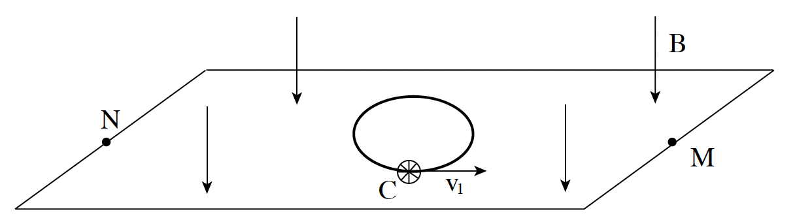

קבוצת שחקנים משחקת בכדור טעון במטען חשמלי המצוי בתוך שדה מגנטי. המטען של הכדור גדול במיוחד: Q = 1.26C, והמסה שלו היא m = 280gr. בחישוביכם בשאלה זו הזניחו את השפעת השדה המגנטי הארצי.
א.במשחק ראשון המגרש נמצא בתוך שדה מגנטי אחיד מקביל לרצפה, אשר עוצמתו היא B = 0.5T. (ראו תרשים א). שחקן זורק את הכדור זריקה אופקית באוויר מנקודה M לכיוון הנקודה N בניצב לקווי השדה. המהירות ההתחלתית של הכדור היא v0. הכדור נע בקו ישר במקביל לרצפה כל עוד הוא נמצא בתחום המגרש. חשבו את המהירות v0. (8.33 נקודות)

תרשים א
במשחק שני כיוון השדה המגנטי הוא אנכי כלפי מטה, כמתואר בתרשים ב. השדה המגנטי אחיד על פני כל המגרש ועוצמתו היא כמקודם, B = 0.5T. סעיפים ב-ד מתייחסים למצב זה.
ב.שחקן מניח את הכדור על הרצפה בנקודה C, ומעניק לו מהירות התחלתית v1 במישור הרצפה בכיוון המתואר בתרשים ב. הכדור נע על הרצפה במסלול מעגלי, וחוזר לידיו של השחקן לאחר סיבוב אחד. חשבו את הזמן שארכה תנועת הכדור במסלול. (יש להתעלם מגלגול הכדור ומכוחות חיכוך). (9 נקודות)

תרשים ב
ג.האם השדה המגנטי מבצע עבודה על הכדור? הסבירו. (7 נקודות)
ד.במהלך המשחק השני אחד השחקנים זורק את הכדור באוויר מהנקודה M לכיוון חברו הנמצא בנקודה N.
(1) האם לכוח המגנטי הפועל על הכדור יש רכיב בכיוון המקביל לכוח הכובד? הסבירו.
(2) האם משך הזמן שהכדור נמצא באוויר ארוך ממשך הזמן שהכדור היה נמצא באוויר אילו לא היה שדה מגנטי (כלומר כאשר פועל רק כוח הכובד), קצר ממנו, או שווה לו? הסבירו.
(9 נקודות)